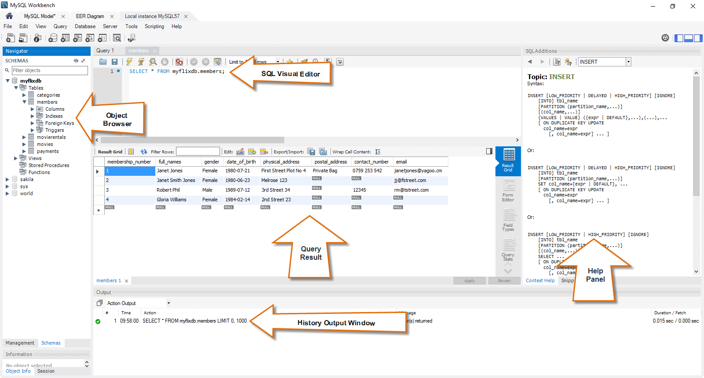

Kursen databas (v1)
Kmom01

Jag har installerat Microsoft Installer och MySQL server 8.0.14 och MySQL workbench. Jag har installerat bash enligt Mos guide för nya Win10 och Debian för Windows. När jag kör från XAMPP startar Maria DB. Länge aborterade den, berodde på att det redan fanns en tjänst igång. Hittade "Tjänster" och såg MySQL80 som var igång. När jag stängt av fungerade det att starta MySQL i XAMPP - fast det blir Maria DB!
Det gick ganska bra att komma igång. Jag missade att ange lösenordet för root vid installationen så det tog en stund att reda ut. Inga problem med MySQL i sig. Inga problem med MySQL Workbench. Men stora problem med användare och lösenord! Sen påstår datorn att jag inte kan installera MySQL i Cygwin; kommandona sudo resp. apt-get finns inte. Installerar Dybian på Windows och provar därifrån Det fungerar inte att köra från Cygwin och Debian. Det fungerar att köra via CMD så då fortsätter jag t.v. med det.
Jag har arbetat med databaser, SQL Server, tidigare. Dessutom har jag påbörjat delkursen htmlphp där det ingår SQLite. Jag har arbetat en hel del med MS Access. I Access, som är ett GUI, finns en databas som heter JET. SQL är inte speciellt förlåtande, det ska vara exakt om det ska bli som man vill. SQL har annan syntax för komentarer.
Jag har inte använt javacript (js) tidigare. Det kommer att bli roligt. Jag fick till en text som ändras mh klockfunktion.
I js är det väldigt viktigt med hur man skriver citat-tekcen. Fick ' SyntaxError: "" string literal contains an unescaped line break” '
för att jag skrivit let 'message = “Gokväll!”;' och inte 'let message = "Gokväll";' . Det tog någon timme att se var felet var. Nu ser jag också att när det är rätt skrivet visas texten med grön, annars med grundfärg.
Firefox är generös och ger en länk till [Learn More] en del fel.
Sen så ska det inte stå 'If' utan 'if'. Samma här; kolla färgen på texten!
Jag har lärt mig använda MySQL Workbench. Det är ett smidigt verktyg som också ger bra svar och bra hjälp.
I uppgift 3 finns frågor som jag inte kan besvara.
"Fundera nu över hur du kan, eller inte kan, besvara följande frågor genom att göra rapporter till skolans ledning via SELECT.
* Visa de lärare som inte har fått en löneökning om minst 3%.
* Gör en rapport som visar hur många % respektive lärare fick i löneöning.
Om du inte kan besvara frågorna, fundera kort över vad du tror hade krävts för att besvara dem.
Vi skall besvara dem i en kommande övning, men det kräver lite mer jobb och vi är inte redo för det än.
Det behövs en temporär tabell eller en view där de gamla lönerna kan sparas.
Det skulle kunna gå att spara namn och lön i en area med oändligt antal variabler.
Kmom02
Här är redovisningstexten
Kmom03
Här är redovisningstexten
Kmom04
Här är redovisningstexten
Kmom05
Här är redovisningstexten
Kmom06
Här är redovisningstexten
Kmom07-10
Här är redovisningstexten